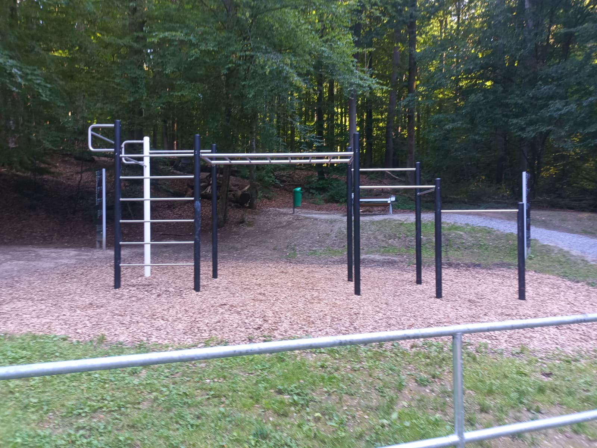

Der Park.
Bei Ingling hinter dem Staudamm liegt dieser kleine Fitness / Calisthenics Park. Der Park ist recht versteckt und unbekannt - deswegen die Seite hier.
Trainiere mit Anderen
Tausche dich mit anderen über Training aus, findet gemeinsame Termine und motiviert euch gegenseitig. Ob Anfänger oder Fortgeschritten - hier ist jeder willkommen.
Kein Equipment?
Kein Problem!
Klimmzugstangen, Barren und Ringe stehen bereit - mehr braucht es nicht. Dein Körpergewicht ist das einzige Gerät, das du mitbringen musst.
Komm Vorbei
- Von Passau aus der B12 Richtung Ingling folgen.
- Am Ortsende links Richtung Damm abbiegen.
- Dem Weg entlang des Staudamms bis zum Parkplatz folgen.
- Die letzten Meter zu Fuß - der Park liegt hinter dem Damm.

Kalender
Tag wählen
Ich bringe mit
Anonym - kein Name, keine E-Mail, keine IP. Gespeichert werden nur Tag, Uhrzeit und Equipment; alle Einträge werden nach dem jeweiligen Tag automatisch gelöscht. Datenschutz